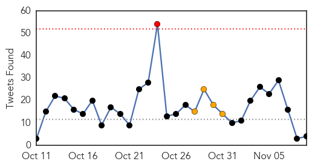

Ebola
30-Day Web Trend
3 alerts, 14 warnings

30-Day Twitter Trend
5 alerts, 13 warnings

Article Locations

Article Confidences
Top Articles:
- 1.000
- UPDATE 1-Ebola death toll rises to 4,950
- 1.000
- MUSC: Pilot with 'flu-like' symptoms is 'no risk' for Ebola
- 1.000
- Two Viral Things Worse Than Ebola: Fear & Politics
- 1.000
- Ebola: Belfast woman tested for virus may have come into contact with airline passengers in London
- 1.000
- Northern Ireland Patient Being Tested for Ebola, PHA Confirms
- 1.000
- Dallas can expect more diseases, all requiring agile responses
- 1.000
- Ebola given to over 250 mice and monkeys at Porton Down weapons research centre
- 1.000
- Relatives of Ebola Patients Criticize Sierra Leone Hospitals
- 1.000
- Relatives of Ebola Patients Criticize Sierra Leone Hospitals
- 0.999
- ‘No need to panic over Ebola’
- 0.999
- Kenya : Japan’s first suspected Ebola case ruled out
- 0.999
- Op-ed: If Ebola comes, Utah's health system is prepared
- 0.999
- Ebola: UN Chief Hails Progress in Fight Against Virus
- 0.999
- Ebola outbreak prompts new safety protocols for healthcare workers
- 0.999
- Perry takes proper tone on Ebola
- 0.999
- Mali's First Ebola Case In Current Outbreak Is 2-Year-Old Girl
- 0.998
- Ebola: UN chief hails progress in fight against virus, urges intensified response
- 0.998
- Ebola: UN chief hails progress in fight against virus, urges intensified response
- 0.998
- U.S. officials unveil plans to test Ebola drugs
- 0.998
- The Kathmandu Post :: Liberia returnees declared Ebola-free
- 0.998
- Symposium offers West African perspective on Ebola
- 0.998
- Philippines donates $1 million to help UN efforts against Ebola
- 0.998
- Ebola: UN chief hails progress in fight against virus, urges intensified response
- 0.998
- 1980s Hot Zone’ scientists think US can handle Ebola
- 0.998
- 1980s ‘Hot Zone’ scientists think US can handle Ebola
- 0.998
- Ebola: Sierra Leone hit by lack of units
- 0.997
- Texas reaches Ebola monitoring endpoint
- 0.997
- Ebola outbreak slowing in Liberia: WHO
- 0.997
- Gulf Daily News Local News WHO specialists in Bahrain
- 0.997
- Remote Sierra Leone region pleads for help in Ebola fight
- 0.997
- Dallas Ends Ebola Monitoring Period
- 0.996
- PokerStars Fights Ebola Virus
- 0.996
- Irish Ebola aid response ‘hampered by red tape’
- 0.996
- No HSE high alert despite North ebola scare
- 0.996
- North Texas is officially Ebola-free
- 0.995
- WHO team to inspect Ebola prevention in Bahrain
- 0.995
- Sustained work required on Ebola front
- 0.995
- Quarantines for Ebola Health Workers Don't Stop the Disease
- 0.994
- Health monitoring ends for Ohio Ebola contacts - Tallmadge Express
- 0.994
- Missionary quarantined in Charlotte connected to three other Ebo
- 0.994
- Missionary quarantined in Charlotte connected to three other Ebo
- 0.994
- Kansas Ebola plan calls for voluntary isolation
- 0.994
- Africa Sets Up Ebola Crisis Fund of $28.5M to Deploy 1,000 Health Workers
- 0.994
- Guinea Is Discovering More Ebola Cases
- 0.993
- Africa Sets Up $28.5m Crisis Fund
- 0.992
- President Koroma’s Envoy Makes Strong Case for Sierra Leone at Saudi Conference for Controlling Ebola
- 0.991
- Ebola Outbreak! The good, the bad, the ugly
- 0.990
- Ebola volunteers wrestle with quarantine mandates
- 0.990
- Korea to send Ebola aid team to Sierra Leone
- 0.990
- Ebola volunteers wrestle with quarantine mandates
Showing top 50 articles...
Top Tweets:
- 0.990
- “@alextomo: Liberia may have stabilised but spread of Ebola now "rampant" in Sierra Leone says WHO”
- 0.929
- Ebola Virus Disease: SitRep, 5 November 2014 ebolaresponse http://t.co/GsVidWEuq0
- 0.864
- Sierra Leone. Ebola : 5.000 morts potentiellement non comptabilisés ? ebolaresponse http://t.co/mXue67VpEI
- 0.861
- Ebola outbreak impedes health care access for other diseases http://t.co/n5TivhT9A3 malaria
- 0.860
- Relatives of Ebola Patients Criticize Sierra Leone Hospitals. http://t.co/AlZfOI9Ky8
- 0.855
- RT: People can’t spread Ebola if they aren’t sick. Only way to get Ebola is direct contact w/ body fluids of a person w/ symptom…
- 0.818
- Ebola: Patient tested at Royal Victoria Hospital for virus. http://t.co/GX3xn2IKAe
- 0.814
- Voices: Ebola establishes dictatorship in Sierra Leone. http://t.co/9WxuYpGX6P
- 0.814
- Voices: Ebola establishes dictatorship in Sierra Leone http://t.co/rlLHcM61yc
- 0.757
- Ebola: UN chief hails progress in fight against virus, urges intensified response. http://t.co/76AFQDxFx9
- 0.733
- ethics of infection http://t.co/Y36FyZbaQq Ebola flu disease http://t.co/Lh61SS0ovP
- 0.695
- People say Moslem and Christian prayers together on most solemn and even social occasions in Sierra Leone, not just ebola burials
- 0.686
- Reggae Vibe, Ebola Message: African Superstars Try To Go Viral. http://t.co/oD24wcAFvF
- 0.686
- Reggae Vibe, Ebola Message: African Superstars Try To Go Viral http://t.co/WmE2YylKca
- 0.633
- Belfast patient tested for Ebola. http://t.co/g7wsfpydg7
- 0.623
- The Photojournalist Who Stared Down Ebola. http://t.co/4DNmMxG18E
- 0.606
- Ebola virus refuses to stick to the script. http://t.co/Vcu7exGWek
- 0.594
- NYC Ebola 'Active Monitoring': From 117 Cases to 357 in 1 Week. http://t.co/iaN9tRMWl0
- 0.583
- RT: Ebola Update 2014: Tropical Diseases That Kill Thousands Each Year Forgotten Amid West Africa Outbreak http://t.co/PupE1Ps…
- 0.546
- Liberia. A wonderful day: Total failure, amazing teamwork. U-report Liberia ebolaresponse ebola http://t.co/9S0KbjK1FG
- 0.543
- Ebola crisis: @UN response team 'still needs resources' http://t.co/VsYRItxXnY
- 0.537
- Maine Nurse To Move Out Of State Following Ebola Quarantine Row. http://t.co/pyuZpxkVZc
- 0.522
- Nurse at center of Ebola quarantine controversy says she'll leave Maine town. http://t.co/QNvnk3rcdk
- 0.522
- Nurse at center of Ebola quarantine controversy says she'll leave Maine town http://t.co/K6URHuZYrz
Mumps
30-Day Web Trend
4 alerts, 0 warnings

30-Day Twitter Trend
0 alerts, 0 warnings

Article Locations

Article Confidences

Top Articles:
-
No articles found for Nov 09, 2014
Top Tweets:
-
No tweets found for Nov 09, 2014